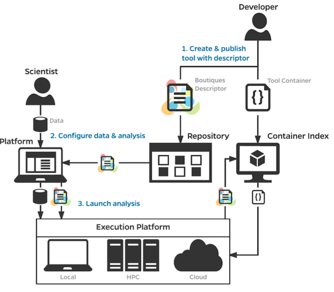

CONP
Dissemination of FAIR Datasets and Analysis Pipelines Using the Canadian Open Neuroscience Platform (CONP)
September 1, 2019
Samir Das
Associate Director of Technology
McGill Centre for Integrative Neuroscience
Montreal Neurological Institute

|

|

|
A little preamble...
Dark data

McLeod et al., Lancet, 2014 Ferguson et al., 2014, Nature Neuroscience
$11 million Brain Canada grant
3 year mission starting in 2018
Our goal...
Share data!


The Plan


Ethics and data sharing

|

|

|
Data Use Agreements |
Registered Access |
Open Access |

CONP technology stack

DATS model

GAP analysis
Datasets/pipelines are still hard to find - and access!
Datasets are not generally fully open
Datasets are not well documented
Datasets are not standardized
Still difficult for individuals/groups to share datasets
Local data repositories and infrastructure come and go
Reproducibility in processing is difficult
Building Principles
Data to stay in original platforms (distributed)
Governance is distributed
Portal will provide direct access to metadata and data
Data and tools are versioned (and integrity check)
Metadata are shareable
Metadata exist both at the dataset and file levels (when this does not cause privacy issues)
Provide UI tools and programmatic access
Working Groups
Central Services (Moyez Dharsee et al.)
Computations (Tristan Glatard, Shawn Brown et al.)
Data transfer (Ssamir Das, Ali Khan et al.)
Metadata (JB Poline, Tom Gee, M. Legault et al.)
The Data


|
The BigBrain is the digitized reconstruction of 7404 hi-res coronal histological sections (20 microns isotropic). It is the brain of a 65 year-old man with no neurological or psychiatric diseases in clinical records at time of death.  |

|
BigBrain - high resolution reference brain
Multimodal integration into an anatomically realistic standard space
Years of development
20 micron resolution
7404 histological slices
1 Terabyte dataset
Open iEEG atlas

CONP portal


Computational infrastructure

Boutiques

|
 |


The Process
Ethics
Curation
Quality Control

|

|
Interoperability
Datalad crawler & extractor


Data publishing

Neurolibre


|
Thank you!Want to contribute data? Do you have any criticisms? Acknowledgements: Alan Evans, JB Poline, Shawn Brown, Cecile Madjar, Jennifer Mercier-Tremblay, Justin Kat, Sanitago Paiva, Dave MacFarlane, Melanie Legault, Xavier Lecours-Boucher, Pierre Rioux, Tristan Glatard, Jason Karamchandani, Derek Lo, Pierre Bellec, Simon Duchense, John Breitner, and many others... |